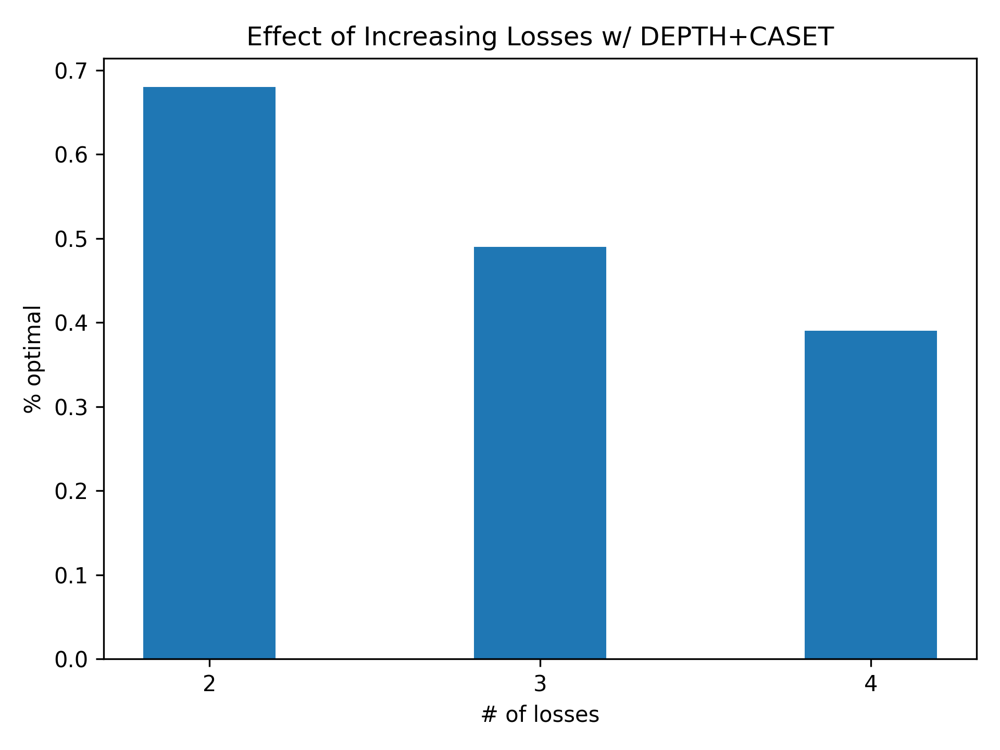
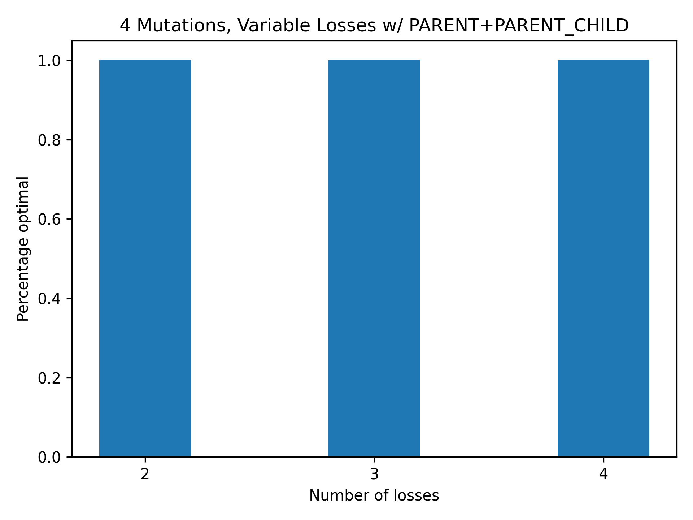
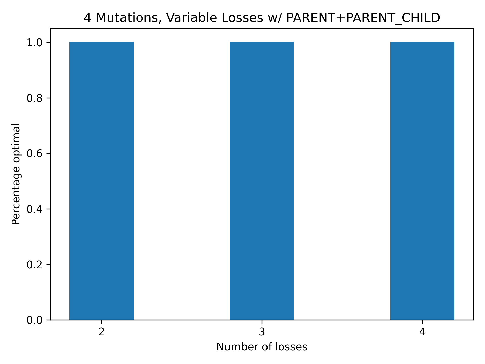

November 1, 2022
Writing
I am working on shortening the Introduction section of the ISA writeup for the purpose of this Abstract.
Here’s the original text.
Cancer is the result of an evolutionary process [cite Nowell] and there exists a wealth of genomic data through which we
can better understand cancer through this evolutionary lens. More precisely, methods have been developed that have the
capacity to infer the evolutionary history of a tumor in the form of tumor phylogenies. Through the inference of tumor
histories, we can move the needle ever more slightly towards a greater understanding of cancer. One specific use case
for these tumor phylogenies may be to offer insights that will guide prognosis. Furthermore, in understanding the
acquisition and losses of mutations throughout a tumor's evolutionary history, more effective treatments may be offered.
For example, a commonly used approach to treat cancer is combinatorial drug therapy. While cominbatorial drug therapy is
oftentimes more effective than the usage of a single drug in many cases, it is within the interest of patients' safety
to minimize the number of drugs used as each drug carries with it its own side effects and toxicities. Tumor phylogenies
can help clinicians make specific decisions that can most effectly treat the cancer while simultaneously minimizing
toxicity.
In order to infer tumor phylogenies from sequencing data, many assumptions needed to be made about the underlying cancer
biology in order to make computation more feasible. One dominant assumption begins with the view of tumor evolution as a
monoclonal process, i.e. originating from a single cell. This assumption makes sense in the face of cancer biology as it
is suspected that the majority of cancers have monoclonal origins. As such, this assumption of monoclonal evolution has
largely remained intact throughout the history of the field of reconstructing tumor evolutionary histories. However, not
all assumptions experienced the same type of luxury. The Infinite Sites Assumption (ISA), states two primary assumptions
about the nature of tumor phylogenies. (1) no mutation occurs more than once (i.e. no homoplasy) and (2) once a mutation
is gained, it is never lost (i.e. no back mutations). Many methods have been developed that infer the evolutionary
history of a tumor as it conforms to the ISA [cite papers]. In accordance, methods have been designed specifically to
compare these tumor phylogenies [cite papers].
It is known that these assumptions are imperfect. However, in light of research showing the role of mutational losses in
a tumor's developing drug resistance, it is increasingly more important to move away from the ISA. Especially with
regards to breast and ovarian cancers, a back mutation of the BRCA2 gene may lead to resistance towards the commonly
used chemotherapy drug cisplatin [cite papers].
The k-Dollo model of tumor evolution relaxes the constraint of no mutational losses. The trees constructed under this
model better explain the true underlying biology of a tumor, but the pace of distance measures research has fallen short
of the advances within tumor phylogeny inference. Specifically, no existing distance measures have been designed for
trees constructed under the k-Dollo model. While these existing distance measures may not necessarily break when given
k-Dollo phylogenies as input, the output generated will likely yield poor distance measures.
This paper contributes a deeper analysis as to why existing distance measures that were designed to work with ISA trees
cannot be applied to k-Dollo phylogenies as is. After addressing demonstrating this problem, we propose a framework
formalized as the Generalized Matching Distance (GMD) Problem that can will resolve the problem of applying
ISA-dependent methods on non-ISA tumor trees.
Here is the revision copy.
Cancer is the result of an evolutionary process [cite Nowell]. Methods are being developed that can infer this process
from sequencing data in the form of tumor phylogenies. Tumor phylogenies can be applied in the prognosis of and as a
tool to guide cancer treatment plans. A common assumption used in the process of inferring tumor phylogenies is the
Infinite Sites Assumption (ISA). The ISA, states two primary assumptions about the nature of tumor phylogenies. (1) no
mutation occurs more than once (i.e. no homoplasy) and (2) once a mutation is gained, it is never lost (i.e. no back
mutations). Many methods have been developed that infer the evolutionary history of a tumor as it conforms to the ISA
[cite papers]. In accordance, methods have been designed specifically to compare these tumor phylogenies [cite papers].
In light of research showing the role of mutational losses in a tumor's developing drug resistance both via copy number
aberrations and true back mutations, it is increasingly more important to move away from the ISA. One such proposed
model that relaxes the ISA is the k-Dollo model that allows for losses of mutations. While many inference methods have
adopted this new model of tumor phylogenies, existing distance measures are not adequate at comparing them. Our research
contributes a deeper analysis as to why existing distance measures that were designed to work with ISA trees cannot be
applied to k-Dollo phylogenies. After demonstrating this problem, we propose a framework formalized as the Generalized
Matching Distance (GMD) Problem that can resolve the problem of applying ISA-dependent methods on non-ISA tumor trees.
End writing
November 2, 2022
Accumulating all figures. (Updated November 17, 2022)
4 mutations, Variable losses 

 

5 mutations, Variable losses
dist vs GMD+dist
4 mutations, 3 losses, LINEAGE heuristic, variable dist
3 losses, Variable gains
November 7, 2022
Today I am continuing to work on my abstract for the BIBM poster. I also spent a ton of time
procrastinating by making a site to keep my lab notebook entries
I also began running some more experiments
Experiment
I ran PARENT+DISC on the space of all trees (probably not the entire space if I'm being honest) with 4 mutations and 4 losses (1 mutation lost 4 times).
Here's the results...
There were 138 optimal comparisons out of 240 total comparisons . With this data, I can create another visualization. The visualization is attached below.
End experiment
November 9, 2022
Today I am planning to run some experiments and fleshing out the tree simulation code.
Experiment
Let's do some experiments on the space of 4 mutations, Variable losses. So far, I haven't
used PARENT-CHILD distance, so let's start with that.
Results for 4 mutations, 2 losses, LINEAGE, PARENT-CHILD:
Results for 4 mutations, 3 losses, LINEAGE, PARENT-CHILD: 3894/6642 comparisons were optimal
Results for 4 mutations, 4 losses, LINEAGE, PARENT-CHILD: 202/240 comparisons were optimal
End experiment
November 12, 2022
Finalizing the BIBM abstract.
Here's the finalized version.
I'm also continuing some brainstorming work on simulating trees.
Experiment
I finished the experiments that I wanted to do on November 9th. Here are some results.
Results for 4 mutations, 2 losses, LINEAGE, PARENT-CHILD: 23723/31152 comparisons were optimal
End experiment
November 14, 2022
Submitted the BIBM abstract.
November 15, 2022 - November 17, 2022
Received acceptance for BIBM poster abstract. Worked on simulating trees.
Problem: (SaMT) Simulating All Mutation Trees with n gains, k losses (mutation A lost k times)
Input:
- A mutation tree T with n gains, where each gain is represented by a letter from {A, B, ..., Z}
- A num k representing k losses (the number of times the mutation A is lost.)
Output: All valid mutation trees with n gains where gain 'A' is lost k times.
Algorithm 1:
let L be an array.
Algorithm-2(current_tree T'= A mutation tree T, k, list L)
return L
Algorithm 2:
If k is 0.
Add current_tree to L
Otherwise...
For each node q in in the current_tree
If the label of q is not 'A-':
If q doesn't have a child that is labeled 'A-':
Experiment
Continuing to conduct experiment on PARENT-CHILD distance. Now I am combining PARENT(heuristic) with PARENT-CHILD distance.
Here are the results:
Results for 4 mutations, 2 losses, PARENT, PARENT-CHILD: 31152/31152
Results for 4 mutations, 3 losses, PARENT, PARENT-CHILD: 6642/6642
Results for 4 mutations, 4 losses, PARENT, PARENT-CHILD: 240/240
I am also combining DEPTH with PARENT-CHILD distance.
Here are the results:
Results for 4 mutations, 2 losses, DEPTH, PARENT-CHILD: 20837/31152
Results for 4 mutations, 3 losses, DEPTH, PARENT-CHILD: 2184/6642
Results for 4 mutations, 4 losses, DEPTH, PARENT-CHILD: 34/240
End experiment